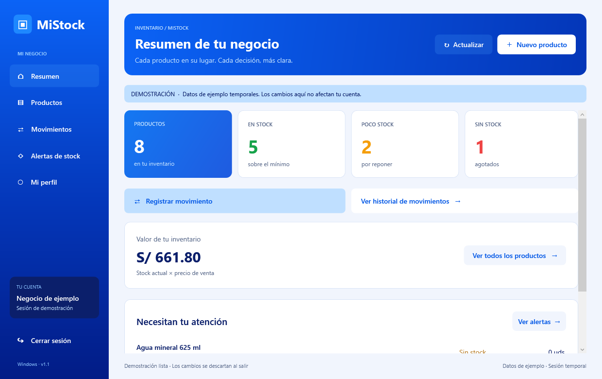

Encuentra cada producto
Consulta precios y existencias. Busca por nombre o código, y filtra por categoría.
Del mostrador a tu celular. Organiza tus productos, registra cada movimiento y sabe qué necesitas reponer, estés donde estés.

Lo que necesitas para entender tu inventario, sin perderte entre hojas y apuntes.
Consulta precios y existencias. Busca por nombre o código, y filtra por categoría.
Registra entradas y salidas con su fecha y nota. Consulta el historial cuando lo necesites.
Define un mínimo por producto y descubre qué está por agotarse antes de quedarte sin stock.
La misma identidad de MiStock y el inventario de tu cuenta en cada versión.
Más espacio para gestionar tu negocio con teclado y mouse.
Tu inventario a la mano, directamente en tu celular Android.
Abre MiStock en Safari y lleva su icono a tu pantalla de inicio.
Las descargas corresponden a los archivos actuales del proyecto. Para consultar y guardar tu inventario necesitas conexión a internet.
No necesitas una cuenta distinta para cada dispositivo.
Entrar a mi inventarioDescarga Windows o Android, o abre la web desde tu iPhone.
Usa el mismo correo y contraseña de MiStock.
Consulta tus productos y registra cada entrada o salida.
Sí. Las versiones de MiStock se conectan al inventario de la misma cuenta. Inicia sesión con tu correo y contraseña habituales.
Abre la versión web con Safari. Pulsa Compartir, elige «Añadir a pantalla de inicio» y confirma. Ver instrucciones de Apple ↗
La interfaz instalada puede abrirse si ya está guardada en el dispositivo. Para iniciar sesión, consultar o modificar tu inventario necesitas conexión a internet.
Descarga el archivo EXE y ábrelo en tu equipo Windows de 64 bits. Es una versión portátil e incluye el entorno que necesita para funcionar.
Sí. La descarga contiene el APK de desarrollo que se está usando en este proyecto. Su instalación es manual y no procede de Google Play.